Reviews
What I did
- Defined the design goals for chat
- Created personas, storyboards, wireframes and simple prototypes
- Incorporated user study findings
- Created pixel perfect photoshop mocks
- Provided detailed instructions to developers
- Dogfooded the product and filed bugs
Related Projects


Messaging for Outlook.com
I designed Messaging (chat) for Outlook.com, which replaced Hotmail and had 420 million users as of February 2013. Below I describe the principles that guided my design decisions.

Before
After
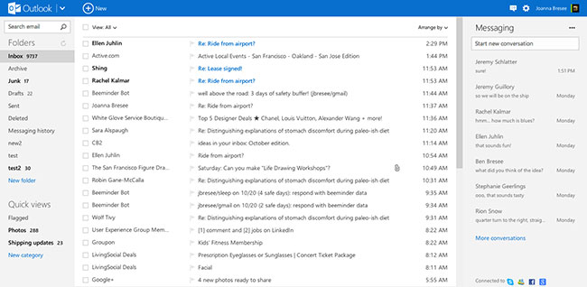3 principles that guided my design decisions
1. Be great at something
Before
The Hotmail landing page supported many scenarios, but was not clearly great at one thing. You could view mail, see social updates, read MSN news, chat, or see the weather.
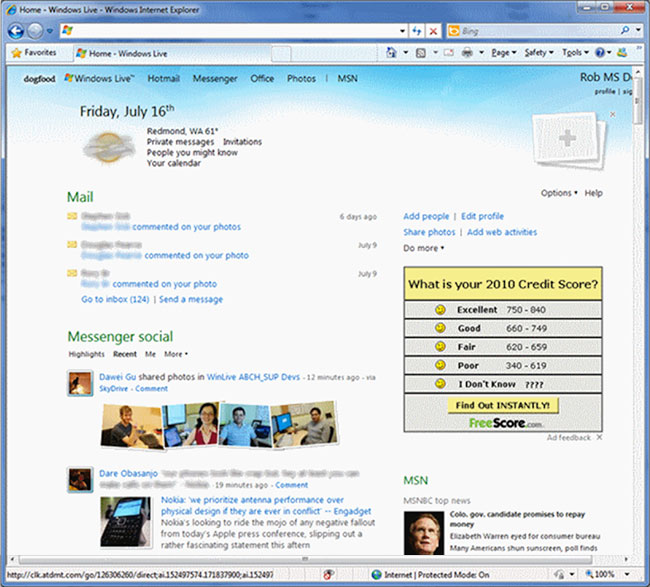After
I designed Messaging in Outlook.com to be in a collapsible pane, which supplements mail without adding distracting clutter. Outlook.com is great at mail.
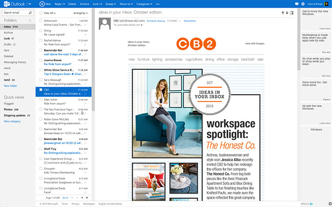A toast appears when you get an incoming message, which you can ignore. Clicking on the toast opens the Messaging pane. It does not overlap your content.
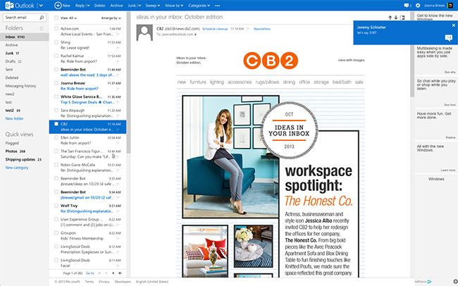 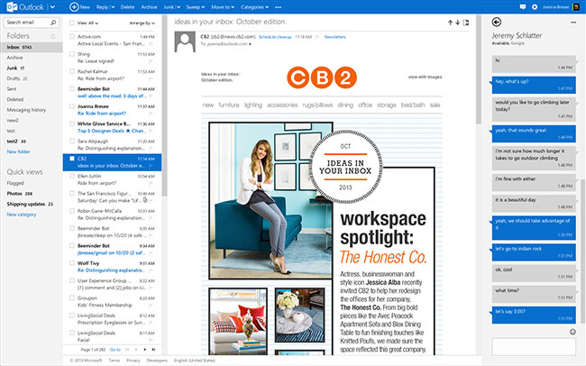The collapsible pane allows Messaging to be available on every Microsoft web application and fit conversations on the grid. Gizmodo commented on the design:
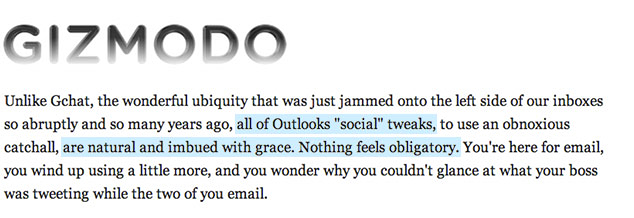2. Reduce Clutter
Before
Hotmail had multiple entry points for accessing your contacts.
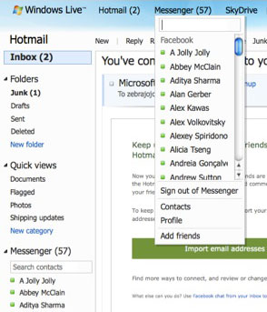After
I created a single entry point, which reduced clutter an increased confidence. Users no longer need to decide which method they should use to access the contact list.
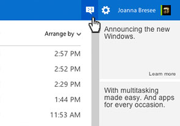 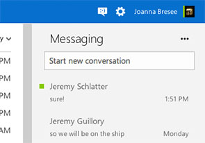Before
Hotmail displayed contacts alphabetically. My list included over 200 online contacts.
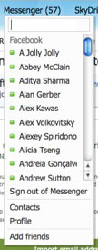After
Messaging uses a list of recent conversations to resume conversations, which reduces clutter by showing the most relevant contacts.
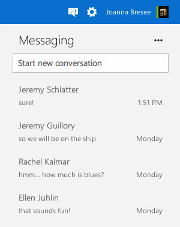The steps that I and other designers took to reduce clutter in the new Outlook.com was noted in many articles, including this Verge article:
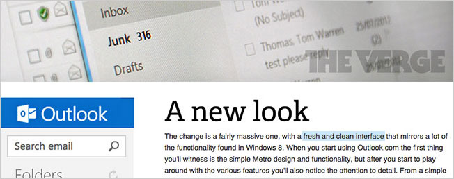3. Align with suite of applications
Messaging exists in the context of other Microsoft web applications. I worked with developers to ensure that type baselines aligned across pages to anchor the Messaging content.
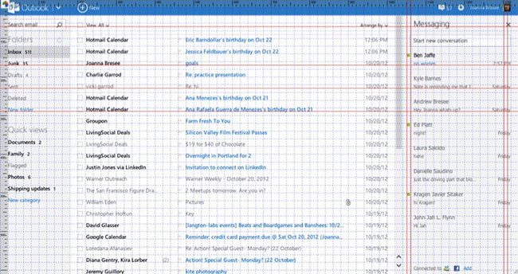